ZMP RoboCar Reference Manual
7. サンプルアプリケーション
概要
Windows上で動作するサンプルアプリケーションの機能及び実行方法を説明します。
弊社から提供するサンプルアプリケーションはLANでPCとRCを接続することで
各種センサ情報の取得及び、操舵角と駆動速度の送信を行います。
ソフトウェア構成
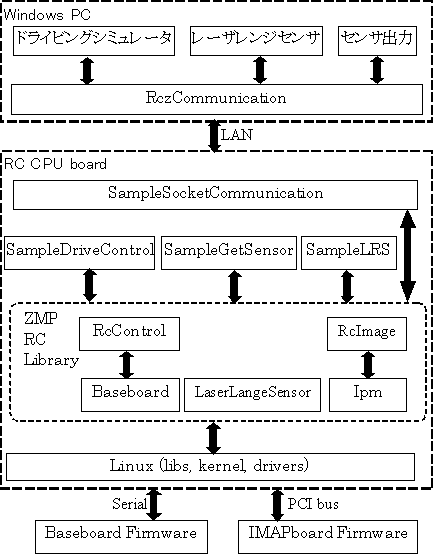
図: ソフトウェア構成図
アプリケーション
IpmServer
機能概要
Windows上のカメラキャリブレーションツール(RczCameraCal)と情報をやりとりするためのサーバプログラム。
使用方法
/root/zmp/samples/IpmServer/ipm_serverを起動
cd /root/zmp/samples/IpmServer
./ipm_server
※ctrl+cでプログラム終了
操作は、すべてカメラキャリブレーションツールから行います。
SampleGetSensor
機能概要
各種センサの情報を10msec毎に取得する
使用方法
/root/zmp/samples/SampleGetSensor/Debug/SampleGetSensorを起動
cd /root/zmp/samples/SampleGetSensor/Debug
./SampleGetSensor
以下のセンサ情報を10msec間隔で取得して表示します。
ステアリングサーボ情報
・現在位置(deg)
・現在電流(mA)
・現在温度(℃)
・現在電圧(mV)
RC内部センサ
・ジャイロセンサ(deg/sec)
・加速度X軸(G)
・加速度Y軸(G)
・加速度Z軸(G)
・モータエンコーダ(cycle/sec)
・WHEELエンコーダ1(mm/sec)
・WHEELエンコーダ2(mm/sec)
・WHEELエンコーダ3(mm/sec)
・WHEELエンコーダ4(mm/sec)
赤外線測距センサ
・赤外線測距センサ0～7(mm)
電源情報
・モータ電流(mA)
・バッテリレベル(V)
※ctrl+cでプログラム終了
センサ出力
RCのジャイロセンサ、加速度センサ(X軸/Y軸/Z軸)、赤外線測距センサ8個の値を10ms毎に更新します。
キーボード入力及びスライダーのマウス操作によりRCを操作します。
使用方法
RC側のアプリケーションを起動
RCにログインして以下のコマンドで実行ファイルのあるディレクトリに移動します。
cd zmp/samples/SampleSocketCommunication/Debug/
以下のコマンドで通信アプリを起動します。
./SampleSocketCommunication xxx.xxx.xxx.xxx
(※ xxx.xxx.xxx.xxxはセンサ出力アプリを起動するPCのIPアドレス)
PC側のアプリケーションを起動
[スタート]→[すべてのプログラム]→[ZMP]→[RoboCar]→[センサ出力]を起動
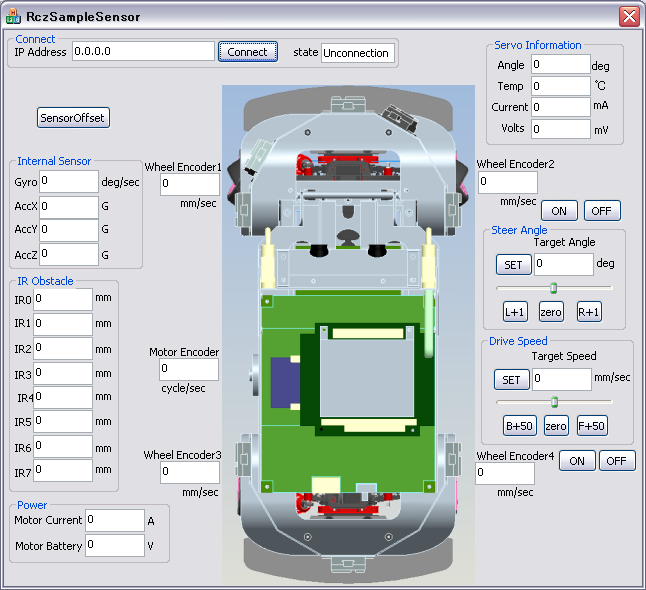
図: センサ出力 イメージ図
ネットワーク接続
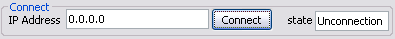
左側の枠にRCのIPアドレスを入力します。
"Connect"ボタン押してRCとの接続に成功すると右側に"Connected"と表示されます。
接続に失敗すると"start failed"と表示されます。
RCの操舵角操作
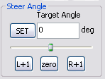
RCの操舵角を手動で操作します。
SETボタン：”target Angle”に入力された値をRCに送信します。
target Angle：RCに送信する値を入力します。(-30度～30度)
スライダー：マウスでスライダーを移動させることでRCに値を送信します。
L+1ボタン：現在の操舵角を左に1度移動させます。
zeroボタン：操舵角を0度に移動させます。
R+1ボタン：現在の操舵角を右に1度移動させます。
RCの速度操作
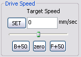
RCの直進速度を手動で操作します。
SETボタン：”target”に入力された値をRCに送信します。
target Speed：RCに送信する値を入力します。(-2800mm/s～2800mm/s)
スライダー：マウスでスライダーを移動させることでRCに値を送信します。
B+50ボタン：現在の速度から-50した値を設定します。
zeroボタン：速度を0に設定します。
F+50ボタン：現在の速度から+50した値を設定します。
赤外線測距センサ出力
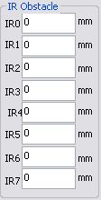
RCから出力された赤外線測距センサの値を10ms毎に更新します。
障害物が10cm以内にある場合は"near"と表示されます。
障害物が75cm以内に無い場合は"long"と表示されます。
障害物が10～75cmの間にある場合は障害物までの距離をmm単位で表示します。
エンコーダ出力
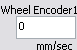
RCから出力されたモータ及び各ホイールのエンコーダの値を10ms毎に更新します。
wheel Encoder1：左前輪エンコーダ値
wheel Encoder2：右前輪エンコーダ値
wheel Encoder3：左後輪エンコーダ値
wheel Encoder4：右後輪エンコーダ値
Motor Encoder ：モータエンコーダ値
ジャイロ／加速度出力
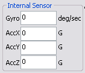
RCから出力されたジャイロセンサと加速度センサ(X軸,Y軸,Z軸)の値を10ms毎に更新します。
Gyro：ジャイロセンサ値
AccX：X軸加速度センサ値
AccY：Y軸加速度センサ値
AccZ：Z軸加速度センサ値
電源情報出力
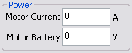
RCから出力された電源情報を10ms毎に更新します。
Motor Current：モータ電流
Motor Battery：モータ電圧
操舵用サーボモータ出力
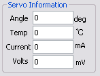
RCから出力された操舵用サーボモータの値を10ms毎に更新します。
Angle：操舵角
Temp：サーボモータ温度
Current：サーボモータ電流
Volts：サーボモータ電圧
SampleDriveControl
機能概要
駆動用モータとステアリングサーボモータをコンソールからのキー入力で操作します。
使用方法
/root/zmp/samples/SampleDriveControl/SampleDriveControlを起動
cd /root/zmp/samples/SampleDriveControl
./SampleDriveControl"
キー入力によってRCを操作
r:ステアリングサーボを現在角度から右に3度切る(-30deg～30deg)
l:ステアリングサーボを現在角度から左に3度切る(-30deg～30deg)
f:駆動用モータを現在速度から前進方向に(+)100mm/s加速する(-2800mm/s～2800mm/s)
b:駆動用モータを現在速度から後退方向に(-)100mm/s加速する(-2800mm/s～2800mm/s)
s:駆動用モータの速度をゼロ、ステアリングサーボの角度をゼロに設定する
p:駆動用モータの状態をBRAKEにする
o:駆動用モータの状態をOFFにする
g:駆動用モータの状態をONにする
v:駆動用モータの速度を設定する(-2800mm/s～2800mm/s)
例1) "v300"と入力した場合、300mm/secで前進する
例2) "v-50"と入力した場青、(-)50mm/secで後退する
a:ステアリングサーボの角度を設定する(-30.0deg～30.0deg)
例1) "a15.2"と入力した場合、原点から15.2度右へ切る
例2) "a-5.6"と入力した場合、原点から-5.6度左へ切る
t:駆動用モータのトルク設定(0～255)
例1) "t0"と入力した場合、駆動用モータのトルクはゼロになる
例2) "t10"と入力した場合、駆動用モータのトルクは10になる
e:ステアリングサーボ、駆動用モータにゼロを設定して状態をOFFにする(ループから抜ける)
※ctrl+cでプログラム終了
ドライビングシミュレータ
RCの左側カメラの画像(補正前)を100ms毎に更新します。
RCのジャイロセンサ、加速度センサ(X軸/Y軸/Z軸)、赤外線測距センサ8個の値を10ms毎に更新します。
PCにUSBで接続したゲーム用ハンドル及びアクセルから値を取得してRCを操作します。
※ ゲーム用ハンドルはメーカーや型番によって出力される値が異なるのでサンプルプログラムの修正が必要になります。
使用方法
RC側のアプリケーションを起動
RCにログインして以下のコマンドで実行ファイルのあるディレクトリに移動します。
cd zmp/samples/SampleSocketCommunication/Debug/
以下のコマンドで通信アプリを起動します。
./SampleSocketCommunication xxx.xxx.xxx.xxx
※ xxx.xxx.xxx.xxxはドライビングシミュレータアプリを起動するPCのIPアドレス
PC側のアプリケーションを起動
[スタート]→[すべてのプログラム]→[ZMP]→[RoboCar]→[ドライビングシミュレータ]を起動
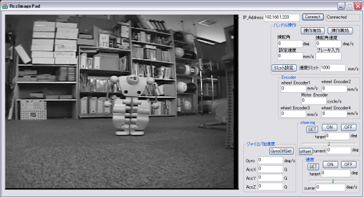
図: ドライビングシミュレータ イメージ図
ネットワーク接続
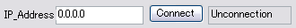
左側の枠にRCのIPアドレスを入力します。
"Connect"ボタン押してRCとの接続に成功すると右側に"Connected"と表示されます。
接続に失敗すると"start failed"と表示されます。
カメラ画像
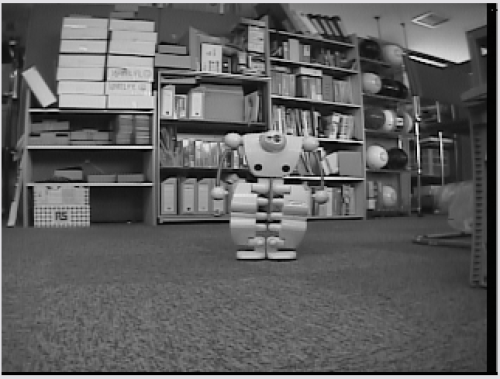
RCの左側カメラの画像を100ms毎に更新します。
※ ネットワークトラフィック量が多い場合等は、ネットワーク遅延によって画像取得に失敗する場合があります。
ハンドル操作
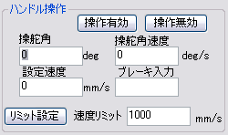
PCにUSBで接続したゲーム用ハンドルの値を表示します。
ゲーム用ハンドルは別途用意する必要があります。
ゲーム用ハンドルはメーカー／型番によって出力値が異なるため、ハンドル操作を行う場合はサンプルプログラムの処理を用意したゲーム用ハンドルの出力値に合わせる必要があります。
操舵角：ステアリングの角度を50ms毎に更新します。(-90度～90度)
操舵角速度：操舵角の1秒あたりの移動量を50ms毎に更新します。
設定速度：アクセルからの入力をRoboCarに送信する速度に変換して表示します。
ブレーキ入力：ブレーキからの入力を表示します。
速度リミット：RoboCarに送信する最大速度を設定します。アクセルからの入力が速度リミットより大きい場合でも速度リミット以上の値は送信されません。速度リミットで設定出来る値は0～2800mm/sです。
リミット設定：速度リミットに入力された値を設定します。このボタンを押さないと”速度リミット”へ入力した値は反映されません。
操作有効：このボタンを押すとステアリング・アクセル・ブレーキからの入力が有効になります。デフォルトは有効になっています。
操作無効：このボタンを押すとステアリング・アクセル・ブレーキからの入力が無効になります。
RCの操舵角操作
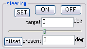
RCの操舵角を手動で操作します。
ONボタン：操舵用サーボ状態をONにします。
OFFボタン：操舵用サーボ状態をOFFにします。
SETボタン：”target”に入力された値をRCに送信します。
target：RCに送信する値を入力します。(-30度～30度)
スライダー：マウスでスライダーを移動させることでRCに値を送信します。
present：RCから出力された値を10ms毎に更新します。
offsetボタン：”current”の値をサーボのゼロ位置に設定します。(調整用)
※ ゲーム用ハンドルが接続されている場合は”target”の値が50ms毎に更新されます。
RCの速度操作
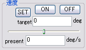
RCの直進速度を手動で操作します。
ONボタン：駆動用モータ状態をONにします。
OFFボタン：駆動用モータ状態をOFFにします。
SETボタン：”target”に入力された値をRCに送信します。
target：RCに送信する値を入力します。(-2800mm/s～2800mm/s)
スライダー：マウスでスライダーを移動させることでRCに値を送信します。
present：RCから出力された値を10ms毎に更新します。
※ ゲーム用ハンドルが接続されている場合は”target”の値が50ms毎に更新されます。
赤外線測距センサ出力
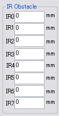
RCから出力された赤外線測距センサの値を10ms毎に更新します。
障害物が10cm以内にある場合は"near"と表示されます。
障害物が75cm以内に無い場合は"long"と表示されます。
障害物が10～75cmの間にある場合は障害物までの距離をmm単位で表示します。
エンコーダ出力
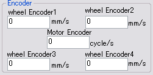
RCから出力されたモータ及び各ホイールのエンコーダの値を10ms毎に更新します。
wheel Encoder1：左前輪エンコーダ値
wheel Encoder2：右前輪エンコーダ値
wheel Encoder3：左後輪エンコーダ値
wheel Encoder4：右後輪エンコーダ値
Motor Encoder ：モータエンコーダ値
ジャイロ／加速度出力
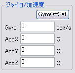
RCから出力されたジャイロセンサと加速度センサ(X軸,Y軸,Z軸)の値を10ms毎に更新します。
Gyro：ジャイロセンサ値
AccX：X軸加速度センサ値
AccY：Y軸加速度センサ値
AccZ：Z軸加速度センサ値
GyroOffSetボタン：”Gyro”の値をGyroセンサのゼロ位置に設定します。(調整用)
SampleObstacleAvoidance
機能概要
画像処理ボードからオブジェクト抽出(ヒストグラム)結果を取得して障害物を発見すると直進を停止する。
使用方法
/root/zmp/samples/SampleObstacleAvoidance/SampleObstacleAvoidanceを起動
cd /root/zmp/samples/SampleObstacleAvoidance
./SampleObstacleAvoidance
画像処理ボードからのオブジェクト抽出(ヒストグラム)結果を定期定期に取得して、障害物を検知すると直進を停止します。障害物が無くなると再度前進します。
※ctrl+cでプログラム終了
レーザレンジセンサ(オプション)
RCにUSBケーブルで接続したレーザレンジセンサの値を100ms毎に更新します。
RCと接続開始と同時に前進して障害物を回避するように操舵角を送信します。
障害物に対して一定距離以内に近づくと後進して障害物から離れます。
使用方法
RC側のアプリケーションを起動
RCにログインして以下のコマンドで実行ファイルのあるディレクトリに移動します。
cd zmp/samples/SampleSocketCommunication/Debug/
以下のコマンドで通信アプリを起動します。
./SampleSocketCommunication xxx.xxx.xxx.xxx
(※ xxx.xxx.xxx.xxxはレーザレンジセンサアプリを起動するPCのIPアドレス)
PC側のアプリケーションを起動
[スタート]→[すべてのプログラム]→[ZMP]→[RoboCar]→[レーザレンジセンサ]を起動
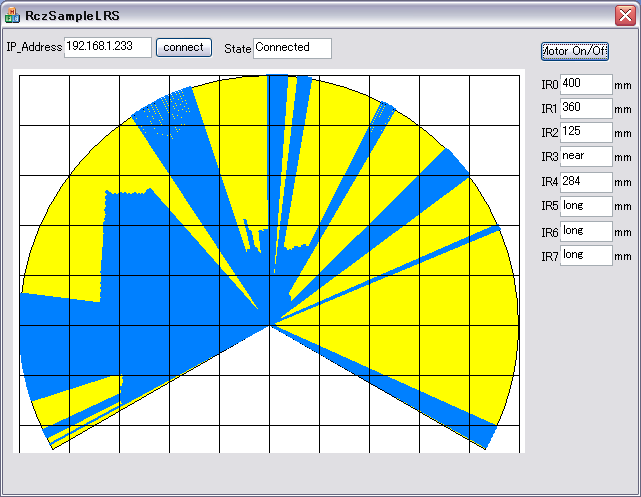
図: レーザレンジセンサ イメージ図
ネットワーク接続
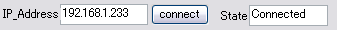
左側の枠にRCのIPアドレスを入力します。
"connect"ボタン押してRCとの接続に成功すると右側に"Connected"と表示されます。
接続に失敗すると"start failed"と表示されます。
モータON/OFF
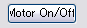
"Motor On/Off"ボタンを押すたびにRCの駆動用モータと操舵用モータのON/OFFが切替わります。
赤外線測距センサ出力
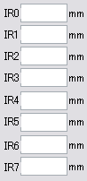
RCから出力された赤外線測距センサの値を10ms毎に更新します。
障害物が10cm以内にある場合は"near"と表示されます。
障害物が75cm以内に無い場合は"long"と表示されます。
障害物が10～75cmの間にある場合は障害物までの距離をmm単位で表示します。
障害物表示
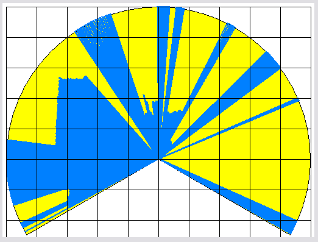
RCから出力されたレーザレンジセンサの値を100ms毎に更新します。
黄色い部分はセンサの測定範囲を現し、青い部分は障害物が無い範囲を表します。
黒線の升目は一辺が100cmです。
SampleLRS(LaserRangeSensor接続時のみ実行可能)
機能概要
LaserRangeSensorの値を定期的に取得して、障害物までの距離と方向を判断して
RCの駆動モータ速度とステアリングサーボの角度を制御します。
使用方法
/root/zmp/samples/SampleLRS/Debug/SampleLRSを起動
cd /root/zmp/samples/SampleLRS/Debug
./SampleLRS
起動と同時に直進して、障害物が60cm以内に近づくとステアリングを操作して25cm以内に近づくと後退して障害物を回避します。
※ctrl+cでプログラム終了
キャリブレーションツール
カメラ画像正規化処理のために、RoboCar毎に適切な補正データが必要です。
そのため、RoboCarを初めてお使いになるときは、カメラキャリブレーション作業を 行ってください。
また、大きな衝撃を与えるなど、両カメラの位置関係が 変わってしまった可能性がある場合はカメラキャリブレーションを やりなおしてください。
キャリブレーション環境
- Windows PC
キャリブレーション用ツールはWindowsアプリケーションです。 Windowsの動作するPCを用意してください。
- ネットワーク環境
また、画像をPCに送りその画像を元にキャリブレーションするため、 高速で安定したネットワーク環境が必要です。 無線LANで安定した速度が得られない場合、有線LANでの接続 で試してみてください。
- チェスボード
カメラの前にかざします。CD内にあるchesboardパターンを大きめの紙(A4以上)に 印刷して、平らなボードに貼り付けてください。
機能一覧
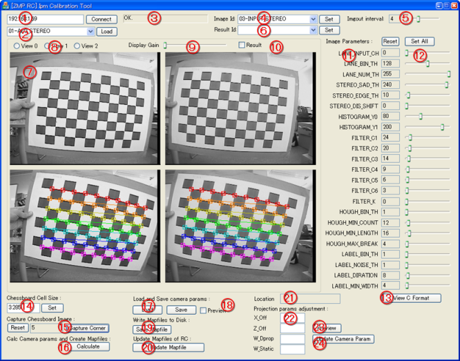
図: キャリブレーションツール
接続先IPアドレス設定ボックスと、接続ボタン
RoboCarのIPアドレスを指定して、接続します。 RoboCarには、あらかじめログインして、IpmServerを起動しておいてください。 （6.サンプルアプリケーション の IpmServer を参照）
プログラム選択ボックスと、ロードボタン
プログラムを選択して、IMAPCARへロードをします。 プログラムとデータのロードが完了すると、IMAPCARはプログラムを 開始します。
ステータスメッセージ表示ボックス
接続情報や、ロード中、ロード完了、またエラー発生など、 ネットワークコネクションの状態や、IMAPCARからのメッセージを 表示するエリアです。
イメージID選択ボックスと、イメージID選択ボタン
処理途中の画像を表示するために、イメージIDを選択します。 イメージIDを要求すると、IpmServerは、IMAPCARから指定された画像を読み込み、送り返してきます。
イメージ更新インターバル
処理途中の画像を読み込むタイミングを設定します。 表示の更新の速さと、ネットワーク越しにやりとりするデータ量のトレードオフになります。 適切に表示される値を選んでください。
リザルトID選択ボックスと、リザルトID選択ボタン
結果を取得するためにリザルトIDを選択します。 IMAPCARは、オブジェクト抽出のアルゴリズムを切り替え、 IpmServerは指定された結果を読みこんで返します。
画像View領域
画像または結果を表示する領域です。
View選択ラジオボタン
ImageIDや、ResultIDによっては、 受け取ったひとつのデータを、 いくつかの表示方法で表示するように、作られています。 どの表示方法を選択するかをここでチェックします。
ディスプレイゲイン設定スライダ
画像によっては値が小さいために、そのままでは 見にくい場合があります。そのような場合に、 表示のみゲインを上げ、見やすくすることができます。
リザルトチェックボタン
ImageIdも、ResultIDも要求している場合、IpmServerは 両方のデータを送信してきています。 どちらを表示するか、このチェックボックスで切り替えます。
画像パラメータスライダ
IMAPCARへ送信する外部パラメータの値です。 スライダを操作するごとに値が更新されます。
画像パラメータリセットボタンと、オールセットボタン
リセットは起動時のデフォルト値に戻ります。 オールセットボタンは、すべての値をIMAPCARに送信し、 更新するボタンです。
View C Foramtボタン
現在の画像パラメータの値を、C++言語の形式で表示します。 プログラムを開発する際に、 初期設定として、IpmManagerSetParam()メソッドにそのまま渡す場合に 便利です。
チェスボードセルサイズボックス
キャリブレーション時に使用する実際にチェスボードの 1つのセルのサイズを指定します。できる限り正確な値を 入力してください。単位は[cm]で、小数で入力します。
チェスボード画像キャプチャボタン
キャリブレーションのための画像を1枚キャプチャします。 チェスボードをカメラの前に掲げてボタンを押してください。
ImageIdを「
03-INPUT_STEREO」にしている場合のみ有効です。キャリブレーション計算ボタン
20枚のチェスボードイメージをキャプチャできたら、 キャリブレーションの計算ができます。 計算に多少時間がかかります。
キャリブレーションの結果「カメラパラメータ」と、「マップファイル」 が内部に生成されます。
カメラパラメータLoad/Saveボタン
カメラパラメータ(camera.xml)をディスクに保存、あるいはディスクから読み出します。 Loadは、カメラパラメータを読み込み、内部の「マップファイル」を再計算します。
カメラ正規化プレビューチェック
現在カメラパラメータと、マップファイルで、 入力画像を正規化して見るためのプレビューです。 ImageIdを「
03-INPUT_STEREO」にしている場合のみ有効です。マップデータセーブボタン
現在のマップデータをディスクに保存します。
マップデータ更新ボタン
RoboCar内部のマップデータを更新します。 このボタンを押すと、FTP経由でRoboCarにマップデータファイルが 送られます。 IMAPCARは直ちにリロードされ、MAPファイルも最新のものが読み込まれます。
座標表示ボックス
カメラパラメータ調整のために、現在の距離の値を読み取るボックスです。 以下の条件を満たした場合のみ有効です。 +内部に「カメラパラメータ」データが存在(CaliculateするかLoadで読み込む) +Result Idに「
0x01-HISTOGRAM」を指定 +ResultチェックボックスがON +Viewの選択が「View1」RoboCarを原点とした、平面の座標(x,z)を[cm]単位で表示します。
カメラパラメータ調整ボックス
「カメラパラメータ」のうち、距離画像から実座標に変換する 「プロジェクション」に関係する4つの値を表示しています。
実距離との差がある場合、ここで値を調節することができます。
カメラパラメータ調整プレビューボタン
カメラパラメータ調整ボックスに入力した値で、
0x01-HISTOGRAMの 結果を表示します。 以下の条件を満たした場合のみ有効です。+内部に「カメラパラメータ」データが存在(CaliculateするかLoadで読み込む) +Result Idに「
0x01-HISTOGRAM」を指定 +ResultチェックボックスがON +Viewの選択が「View1」カメラパラメータ更新ボタン
カメラパラメータ(上記ボックスで調整済み)のファイル(camera.xml)を RoboCarに送信します。
カメラキャリブレーション手順
ステレオ視のためのカメラキャリブレーションの手順です。
IpmServerの起動
- RoboCarにログインします。
以下のディレクトリに移動します。
cd /root/zmp/samples/IpmServer起動します。
./ipm_server
キャリブレーションツールの起動
- RczCameraCal.exe をダブルクリックで起動します。
以下のエラーが表示される場合は[Microsoft Visual C++ 2008 再頒布可能パッケージ (x86) ]をインストールする必要があります。 下記URLからダウンロードして下さい。

以下、キャリブレーションツール上の操作です。
接続と、画像の表示
- RoboCarのIPアドレスを指定して、「
Connect」します。 - プログラムを「
01-ALG_STEREO」と指定して、「Load」します。 - Image Idを、「
03-INPUT_STEREO」とし、「Set」します。 これで、ステレオ画像が表示されます。 Imgout Intervalを適切な値にセットします。
接続できない場合は、ネットワークの確認をしてください。 画像が乱れる場合、ときどきしか更新されない場合は、 ネットワークの負荷が大きいことが原因です。 有線LANに切り替えるか、ほかの機器がつながっていない閉じたネットワークなど、 十分に速さの出るネットワークで接続してください。
Imgout Intervalは、画像が乱れない値にしてください。
ネットワーク環境によっては、大きな値にして
更新の間隔を大きくする必要があります。
チェスボードのキャプチャ
- 用意したチェスボードの1マスの大きさを定規などで測ってください。0.1[mm]程度までの精度があると補正が正確になります。
- チェスボードサイズを入力して「Set」してください。
- チェスボードを、ステレオカメラの前に掲げ、すべてのマスが両方の画面に収まる位置にもってきてください。
- 「Capture Corner」ボタンを押します。
うまくチェスボードを発見でき、コーナーを検出できれば、上の画面のように表示されます。
表示されない場合は、物体がカメラに収まっていない、距離が離れている、周辺がくらいといった原因が考えられます。 カメラに近づける、チェッカー柄を画面内におさめる、部屋の明るさを調整するなどを試してください。
20枚キャプチャします。
コーナーがなるべく画面のすみずみまで、すべての位置でキャプチャされるように、 左右、上下の縁のちかくにもっていったり、少し傾けてみたりする等、工夫してみてください。
キャリブレーション計算
- 20枚キャプチャできたら、「Calculate」ボタンを押します。
- 計算が終了すると、「Preview」チェックボックスが自動でONになり、Viewにプレビューが表示されます。
補正された画像を確認してください。
チェスボードをかざしてみると、歪みが補正され、チェスボードの直線が 画面上でも直線に見えます。
また、左右の画像の高さ、向きもあっているはずです。
歪みが大きい、あるいは画像が傾いている場合は失敗です。 ひとつもどって、何枚かを「Capture Corner」しなおしてから、もう一度「Calculate」してみてください。
マップファイルの更新
- 「Update Mapfile」ボタンを押すと、RoboCarに転送され、IMAPCARプログラムが再ロードされます。
プログラムが再スタートしたら、Image Iｄを「
10-NORMALIZED_STEREO」にして「Set」してみてください。IMAPCAR上で正規化されたカメラ画像が確認できます。 さきほどのプレビューでみた画像と同じ画像となっているはずです。
カメラパラメータファイルの保存
「Save」ボタンを押し、「camera.xml」と保存してください。
ユーザーアプリケーションからの利用
以後、API(ライブラリlibRcImage、クラスIpmManager)を使って、 ユーザーアプリケーションを実行すれば、 今設定したマップファイルを自動で読み込むようになります。
カメラパラメータファイルの調整
ステレオ視の結果データから、実距離に投影するために必要なカメラパラメータファイルを、 実測値を元に補正します。 カメラキャリブレーションが終了していて、正しく距離画像が得られていることが前提です。 ライブラリRcImageの、クラスRcImageUtilから使用します。
IpmServerの起動と、キャリブレーションツールの起動
上記と同様に、両方を起動します。
以下、キャリブレーションツール上の操作です。
カメラパラメータファイルの読み込み
「Load」ボタンを押して、カメラパラメータファイルをロードする。
キャリブレーション時に作成して保存した「camera.xml」を ロードしてください。
接続と、パラメータの調整
- RoboCarのIPアドレスを指定して、「Connect」します。
- プログラムを「
01-ALG_STEREO」と指定して、「Load」します。 - Image Idを、「
11-DISPARITY_I」とし、「Set」します。 これで、視差画像が表示されます。 Imgout Intervalを適切な値にセットします。
以下のパラメータを調整して、対象としたい物体がよく現れる値にします。
STEREO_SAD_THSTEREO_EDGE_THSTEREO_DIS_SHIFT
Image Idを、「
14-HISTOGRAM」とし、「Set」します。 これで、ヒストグラム画像が表示されます。以下のパラメータを調整して、対象としたい物体がよく現れる値にします。
HISTOGRAM_Y0HISTOGRAM_Y1
Image Idを、「
15-HISTOGRAM_FILTERED」とし、「Set」します。 これで、ヒストグラム画像にフィルタをかけた画像が表示されます。以下のパラメータを調整して、対象としたい物体がよく現れる値にします。
FILTER_CXFILTER_K
結果の表示
- Image Idは、Imgout Interval、「
00-(no update)」とし、「Set」します。 - Result Idは、「
0x01-HISTOGRAM」とし、「Set」します。 Viewは、「
View 1」とします。実距離に投影された結果が表示されています。 画像上をクリックすると、その位置が、「Location」ボックスに座標値として 表示されます。
パラメータの調整
ここで実際に、カメラの正面50[cm]前方に物体を置き、実際の値と 計測した値でどれだけずれているか確認します。
ずれを直すためには、
X_OffZ_OffW_DpropW_Static
の4つの値を変更して、「Preview」ボタンを押してください。
それぞれの意味は、以下の通りです。
ヒストグラム画像(スクリーン座標)のx,yと、その点での視差値をdとし、 実世界の3次元座標(カメラ座標)をPとすると、
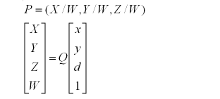
となります。
ここで、Qで表される行列が、キャリブレーション時に生成され、 カメラパラメータファイル(camera.xml)内に保存されています。
このうち4つの値が意味をもち、それぞれ以下の成分となる値です。
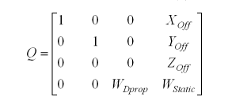
実際の対象物を、たとえば、(0,50)、(100,0)、(100,50)[cm]に置き、 それぞれ正しく値が取れるようなパラメータを見つけます。 二つの'W'は、X,Zの両方に影響を与えることに注意してください。
ヒストグラムに変換する際に、Y方向成分を削除し2次元に落としますので、
Y_Offは、使用しません。
カメラパラメータファイルの更新
- 「Update Camera Param」ボタンを押すと、RoboCarに転送されます。
ユーザーアプリケーションからの利用
以後、API(ライブラリlibRcImage、クラスRcImageUtil)を使って、 ユーザーアプリケーションを実行すれば、 今設定したカメラパラメータファイルを使用した変換結果が得られます。
ZMPライブラリの使用方法
RcControlライブラリ
RCの駆動操作及び各種センサ情報の取得を行います。
カメラ画像及びレーザレンジセンサの情報は別ライブラリを使用します。
用途
・RCの直進操作(-2800mm/s～2800mm/s)
・RCの陀角操作(-30.0deg～30.0deg)
・センサ情報の取得(ジャイロ、加速度(X,Y,Z)、赤外線測距、モータ及びホイールエンコーダ、電源情報)
使用準備
初期化
init()
最初に初期化を行う必要があります。
初期化では各種デバイスの初期化とリソース確保を行います。
スタート
Start()
初期化後にStart()で処理が開始します。
Start()を使わないとセンサ情報の取得が出来ません。
RcControlの主なインタフェース
駆動用モータのON/OFF
SetMotorEnableReq(char enable)
駆動用モータのON/OFF(0=OFF, 1=ON, 2=ブレーキ)を設定します。
初期化後に駆動速度を設定する場合は駆動用モータをONにしておく必要があります。
駆動速度の設定
SetDriveSpeed(int speed)
RCの駆動速度を(-2800mm/s～2800mm/s)で設定します。
駆動用モータがONになっていないと駆動速度を設定してもRCは動きません。
操舵用サーボモータのON/OFF
SetServoEnable(int enable)
操舵用サーボモータのON/OFF(0=OFF, 1=ON, 2=ブレーキ)を設定します。
初期化後に操舵角を設定する場合は操舵用サーボモータをONにしておく必要があります。
操舵角の設定
SetSteerAngle(float angle)
RCの操舵角を0.1deg単位(－30.0deg～30.0deg)で設定します。
操舵用サーボモータがONになっていないと操舵角を設定してもRCは動きません。
操舵用サーボモータ情報の取得
GetServoInfoReq(int id, SERVOINFOADR adr, int len, DRIVE_VALUE* value)
操舵用サーボモータの情報取得を行います。
情報取得の要求からサーボモータの応答を受信するまでの遅延が5ms程度あるのでそれより早い周期で情報取得を行っても値が更新されません。
情報取得フラグ設定
SetReportFlagReq(char flag)
ベースボードから取得するセンサ情報を設定します。
デフォルトでは全て(ジャイロ、加速度、エンコーダ、障害物センサ、電源情報)の情報を10ms毎に受信してlibRcControl内部保持します。
flag=0：何も受信しない。
flag=1：ジャイロ、加速度、エンコーダ
flag=2：障害物センサ
flag=3：ジャイロ、加速度、エンコーダ、障害物センサ
flag=4：電源情報
flag=5：ジャイロ、加速度、エンコーダ、電源情報
flag=6：障害物センサ、電源情報
flag=7：ジャイロ、加速度、エンコーダ、障害物センサ、電源情報
ジャイロ／加速度／エンコーダの取得
GetSensorInfoReq(SENSOR_VALUE* value)
ジャイロ／加速度／エンコーダの情報を取得します。
10ms毎に値が更新されるのでそれより早い周期で情報取得を行っても値が更新されません。
情報取得フラグ設定でジャイロ、加速度、エンコーダを取得しない設定にしていると値は更新されません。
障害物センサ情報の取得
GetObstacleSensorInfoReq(OBSTACLE_VALUE* value)
障害物センサ情報8個の情報を取得します。
10ms毎に値が更新されるのでそれより早い周期で情報取得を行っても値が更新されません。
情報取得フラグで障害物センサの情報を取得しない設定にしていると値は更新されません。
電源情報の取得
GetPowerInfoReq(POWER_VALUE* value)
電源情報を取得します。
10ms毎に値が更新されるのでそれより早い周期で情報取得を行っても値が更新されません。
情報取得フラグで電源情報を取得しない設定にしていると値は更新されません。
使用例
int main() {
RcControl _RcControl; // RCコントロールクラス
DRIVE_VALUE drive; // 操舵用サーボモータ情報構造体
SENSOR_VALUE sensor; // ジャイロ/加速度/エンコーダ構造体
OBSTACLE_VALUE obstacle; // 障害物センサ構造体
POWER_VALUE power; // 電源情報構造体
system("ipm_serial S 4 0"); // ベースボードのストップ
sleep(1);
system("ipm_serial S 4 1"); // ベースボードのスタート
_RcControl.init(); // 初期化
_RcControl.Start(); // 処理開始
_RcControl.SetReportFlagReq(7); // 情報取得フラグ設定
_RcControl.SetMotorEnableReq(1); // 駆動用モータON
_RcControl.SetServoEnable(1); // 操舵用サーボモータON
for(int i=0; i<100; i++){
usleep(1000**100);
_RcControl.SetDriveSpeed(i**10); // 速度設定
_RcControl.SetSteerAngle((float)i%30); // 操舵角設定
_RcControl.GetServoInfoReq(1, 42, 12, &drive); // 操舵用サーボ情報取得
_RcControl.GetSensorInfoReq(&sensor); // ジャイロ/加速度/エンコーダ情報取得
_RcControl.GetObstacleSensorInfoReq(&obstacle);// 障害物センサ情報取得
_RcControl.GetPowerInfoReq(&power); // 電源情報取得
}
_RcControl.SetDriveSpeed(0); // 速度設定
_RcControl.SetSteerAngle(0); // 操舵角設定
_RcControl.SetMotorEnableReq(0);// 駆動用モータOFF
_RcControl.SetServoEnable(0); // 操舵用サーボモータOFF
_RcControl.Stop(); // 処理の停止
_RcControl.Close(); // リソースの解放
return 0;
}
RcImageライブラリ
画像データの取得と処理を行うためのライブラリです。
用途
・画像データの取得
使用条件
初期化
Init()
最初に初期化を行う必要があります。
初期化では各種デバイスの初期化とリソース確保を行います。
プログラムロード
LoadProgram(IMAPALGORITHMNAME alg)
IMAPCARのメモリにオブジェクトファイルとデータ(マップファイル)をロードします。
LoadProgram()の前に初期化が終了している必要があります。
スタート
StartImap()
ロードしたプログラムをスタートさせます。
StartImap()の前に初期化とプログラムロードが終了している必要があります。
RcImageの主なインタフェース
取得画像の選択
SelectImageOutput(STEREOALGOUTPUTIMAGEID sel)
IMAPCARプログラムから取得する画像を選択します。
取得結果の選択
SelectResultOutput(STEREOALGOUTPUTRESULTID)
IMAPCARプログラムから取得する結果を選択します。(レーン検出、オブジェクト抽出、両方)
外部パラメータの設定
SetParam(const StereoAlgParam *param)
IMAPCARプログラムに対して外部パラメータを設定します。
リクエスト待ち
Wait()
IMAPCARプログラムからのリクエストを待ちます。
通常は要求するOutput,Imageの結果が揃ったときにリクエストが生じます。
結果出力の保存
CollectResult()
結果出力を画像処理ボードから読み出してオブジェクト内部に保存します。
レーン検出結果の取得
GetResultLane()
レーン検出結果を取得します。
CollectResultで得た値をこのメソッドで読み出します。
オブジェクト抽出(ヒストグラム)結果の取得
GetResultStereoHist()
オブジェクト抽出(ヒストグラム)結果を取得します。
CollectResultで得た値をこのメソッドで読み出します。
オブジェクト抽出(ハフ変換)結果の取得
GetResultStereoHough()
オブジェクト抽出(ハフ変換)結果を取得します。
CollectResultで得た値をこのメソッドで読み出します。
オブジェクト抽出(ラベリング)結果の取得
GetResultStereoLabeling()
オブジェクト抽出(ラベリング)結果を取得します。
CollectResultで得た値をこのメソッドで読み出します。
画像出力の保存
CollectImage()
画像出力を画像処理ボードから読出し、オブジェクト内部に保存します。
画像サイズの取得
ImageLength()
収集した画像サイズを取得します。
画像の先頭ポインタを取得
ImageData()
収集した画像の先頭ポインタを取得します。
使用例
int main() {
IpmManager _ipmm; // 画像処理モジュールコントロールクラス
_ipmm.Init(); // 初期化
_ipmm.LoadProgram(IMAP_ALG_STEREO_OBSTACLES_1); // プログラムのロード
_ipmm.StartImap(); // 処理の開始
_ipmm.SelectImageOutput(SOF_INPUT_L); // 取得画像の選択(入力画像 左)
_ipmm.ResultOutput(SOR_RESULT_HIST); // 取得結果の選択(ヒストグラム)
while(1) {
_ipmm.Wait(); // リクエスト待ち
if(_ipmm.CollectResult()) { // 結果出力の保存
StereoResultHist result;
_ipmm->GetResultStereoHist(&result); // オブジェクト抽出(ヒストグラム)結果の取得
}
if(_ipmm.CollectImage()) { // 画像出力の保存
ulong length = _ipmm.ImageLength(); // 画像サイズの取得
uchar **data = new uchar[length];
uchar **p = data;
memcpy(data, _ipmm.ImageData(), length); // データを取得
}
}
return 0;
}
LaserRangeSensorライブラリ
レーザレンジセンサ情報の取得を行います。
※ レーザレンジセンサはオプションのため別途購入する必要があります。
用途
・レーザレンジセンサ情報の取得
使用準備
初期化
Init()
Init(int skipline)
最初に初期化を行う必要があります。
初期化では各種デバイスの初期化とリソース確保を行います。
Init()の引数にskiplineを設定するとデータを間引いて情報量をへらします。
例：
Init(2); // 情報量が1/2になります
スタート
Start()
センサ情報の取得を開始します。
センサ情報の取得を開始するには初期化が終了している必要があります。
LaserRangeSensorの主なインタフェース
コールバック関数
OnReceive()
libLaserRangeSensorでセンサ情報を取得すると(100ms毎)ユーザアプリで定義したOnReceive()が呼ばれます。
OnReceive()でデータの処理を行います。
データの取得
GetData(LrsResult *res)
libLaserRangeSensorのバッファに蓄積されたデータを取得します。
弊社オプションのレーザレンジセンサはデータ収集周期が100msなのでそれより早い周期でデータ取得を行っても値は更新されません。
OnReceive()はデータ収集完了時に呼ばれるのでOnReceive()の中でGetData()を呼ぶと収集周期毎にデータの取得が可能です。
使用例
// サンプルレーザレンジセンサクラス
class SampleLRS :public LaserRangeSensorReceiveHandler {
public:
SampleLRS(){}; // コンストラクタ
virtual ~SampleLRS(){}; // デストラクタ
// 初期化
bool Init() {
bool res = lrs.Init(); // レーザレンジセンサの初期化
return true;
}
void SetReceiveHandler() {
lrs.SetReceiveHander(this); // コールバックハンドラの登録
}
bool Start(){
bool res = lrs.Start(); // 処理開始
return true;
}
bool Stop(){
lrs.Stop(); // 処理終了
return true;
}
private:
// コールバック関数
void OnReceive(){
lrs.GetData(&res); // レーザレンジセンサ情報の取得
}
LaserRangeSensor lrs; // レーザレンジセンサクラス
LrsResult res; // 受信データ構造体
};
int main() {
SampleLRS slrs;// サンプルLRSクラス
system("ipm_serial S 4 0");// ベースボードのストップ
sleep(1);
system("ipm_serial S 4 1");// ベースボードのスタート
signal(SIGINT, funcx);// "Ctrl"+"C"の処理を変更
bool flg = 1;
bool ires = slrs.Init(); // サンプルLRSクラスの初期化
if(ires == false)
flg = 0;
slrs.SetReceiveHandler(); // コールバックハンドラの登録
bool sres = slrs.Start(); // 受信処理開始
if(sres == false)
flg = 0;
while (flg) {
usleep(3000);
}
slrs.Stop(); // 受信処理終了
return 0;
}
void funcx(int sig) {
system("ipm_serial S 4 0"); // ベースボードのストップ
sleep(1);
system("ipm_serial S 4 1"); // ベースボードのスタート
signal(SIGINT, SIG_DFL); // "Ctrl"+"C"の処理をデフォルトに戻す
raise(SIGINT); // "Ctrl"+"C"を発生
}